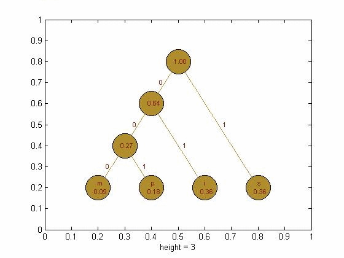
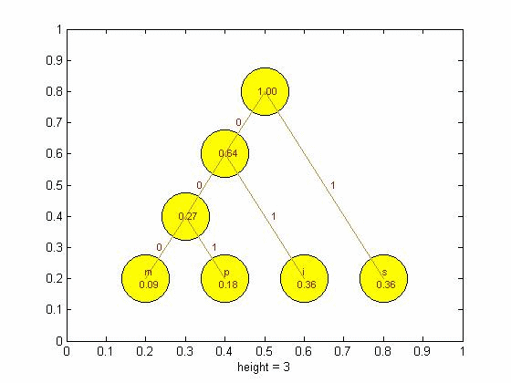

| DiscreteWavelets Toolbox |
Displays tree of Huffman codes
HuffmanTree(u,f,c)
HuffmanTree(u,f,c,options)
HuffmanTree(u,f,c) takes a cell array u of unique characters (or integers), a vector f that contains the relative frequencies for each element in u, and a cell array c that holds the Huffman codes for each of the elements in u and draws the associated Huffman tree.
HuffmanTree(u,f,c,options) allows several parameters to be set. See Optional Arguments below for a detailed description of these parameters.
There are several optional arguments that can be set for HuffmanTree. The order of the parameters does not matter in the function call, but you must follow the standard convention 'Option', 'Value' when invoking the parameters.
The 'NodeColor' may be set to any desired color. Enter the color as an RGB vector of size 3. The default color is [.698 .557 .18].
For example, to change the node color to red, issue the command HuffmanTree(u,f,c,'NodeColor',[1 0 0]);
The 'NodeEdgeColor' may be set to any desired color. Enter the color as an RGB vector of size 3. The default color is [0 0 0].
For example, to change the node color to blue, issue the command HuffmanTree(u,f,c,'NodeEdgeColor',[0 0 1]);
This positive value sets the size of the node in pixels. The default size is 30.
For example, to set the 'NodeSize' to 40, issue the command HuffmanTree(u,f,c,'NodeSize',40);
Use 'NodeFontSize' to set the font size for all node labels. The default font size is 8.
For example, to set the 'NodeFontSize' to 10, issue the command HuffmanTree(u,f,c,'NodeFontSize',10);
Use the 'FontColor' option to change the color of node labels. The default font color is [.541 .118 .008].
For example, to set the 'FontColor' to green, issue the command HuffmanTree(u,f,c,'FontColor',[0 1 0]);
Use the 'BranchColor' option to change the color of the lines connecting the nodes. The default font color is [.698 .557 .18].
For example, to set the 'BranchColor' to black, issue the command HuffmanTree(u,f,c,'FontColor',[0 0 0]);
The option 'Title' can be used to add a title to the graphic. The default is no title.
For example, to add a title, issue the command HuffmanTree(u,f,c,'Title','A Tree');
[u,f,c]=MakeHuffmanCodes('mississippi'); %Get the necessary input from MakeHuffmanCodes
HuffmanTree(u,f,c);

[u,f,c]=MakeHuffmanCodes('mississippi'); %Get the necessary input from MakeHuffmanCodes
HuffmanTree(u,f,c,'BranchColor',[1 0 0],'FontColor',[0 0 1]) %Create the Huffman tree

[u,f,c]=MakeHuffmanCodes('mississippi'); %Get the necessary input from MakeHuffmanCodes
HuffmanTree(u,f,c,'NodeColor',[1 1 0],'FontSize',10,'NodeSize',40) %Create the Huffman tree

© 2007-2008 Patrick Van Fleet